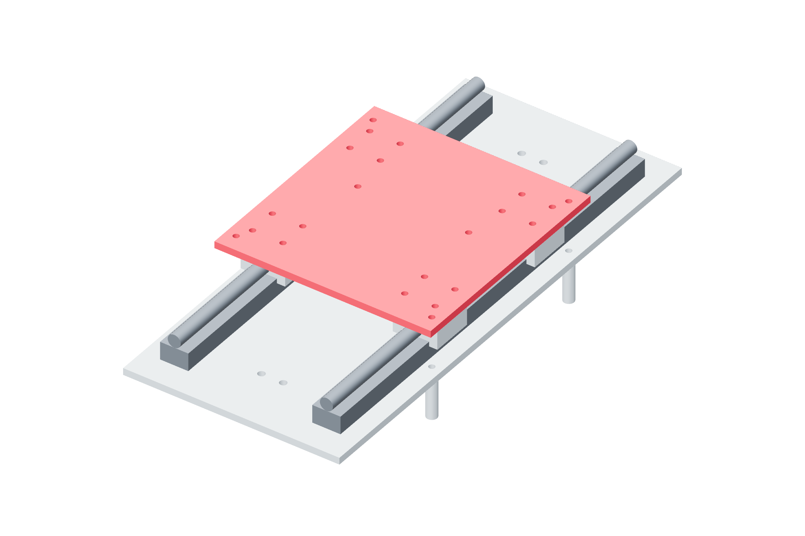

Structure / Y67 / 179
Attach the Y carriage
Sixteen block screws join the metal carriage to four guide blocks. The carriage establishes parallelism before the second rail is locked.
Add1 y-carriage · 16 M5 × 16 · one washer per screw
Tools / setup4 mm hex · caliper depth check · support for Z

- Measure the received blocks' usable tapped depth before choosing the governed screw grip.
- Start all sixteen block screws by hand. Seat them in opposite pairs across the four blocks.
- Move the supported carriage slowly through its intended travel while seating the second rail's feet.
- Repeat the travel after rail fasteners are seated. Keep screw drive and motor belt uncoupled for this check.
Ready when
The carriage traverses the full ±85 mm intended range without a tight region; every screw clamps the plate before bottoming in a block. A tight region or bottomed screw must be corrected mechanically. Do not use the motor to overcome a rail-alignment error.